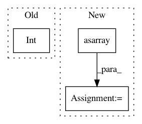

ab0ff941fe4f6469730a8711d40eb32fbc9eacdf,unet3d/model.py,,compute_level_output_shape,#Any#Any#Any#Any#,81
Before Change
output_image_shape = np.divide(image_shape, np.multiply(pool_size, depth)).tolist()
else:
output_image_shape = image_shape
return tuple([None, filters] + [int(x) for x in output_image_shape])
def get_upconv(depth, nb_filters, pool_size, image_shape, kernel_size=(2, 2, 2), strides=(2, 2, 2),
After Change
:param depth: The number of levels down in the U-shaped model a given node is.
:return: 5D vector of the shape of the output node
output_image_shape = np.asarray(np.divide(image_shape, np.power(pool_size, depth)), dtype=np.int32).tolist()
return tuple([None, n_filters] + output_image_shape)
def get_up_convolution(depth, n_filters, pool_size, image_shape, kernel_size=(2, 2, 2), strides=(2, 2, 2),
In pattern: SUPERPATTERN
Frequency: 3
Non-data size: 3
Instances
Project Name: ellisdg/3DUnetCNN
Commit Name: ab0ff941fe4f6469730a8711d40eb32fbc9eacdf
Time: 2017-11-17
Author: david.ellis@unmc.edu
File Name: unet3d/model.py
Class Name:
Method Name: compute_level_output_shape
Project Name: scikit-multiflow/scikit-multiflow
Commit Name: e42bf473dde3f85210ff90b24c53865663abae29
Time: 2020-06-02
Author: 17923265+jacobmontiel@users.noreply.github.com
File Name: tests/meta/test_adaptive_random_forests.py
Class Name:
Method Name: test_adaptive_random_forests_nba
Project Name: scikit-learn-contrib/DESlib
Commit Name: bba1901f835525551dde9ec1537d041abc88d293
Time: 2021-04-08
Author: rafaelmenelau@gmail.com
File Name: deslib/static/oracle.py
Class Name: Oracle
Method Name: predict